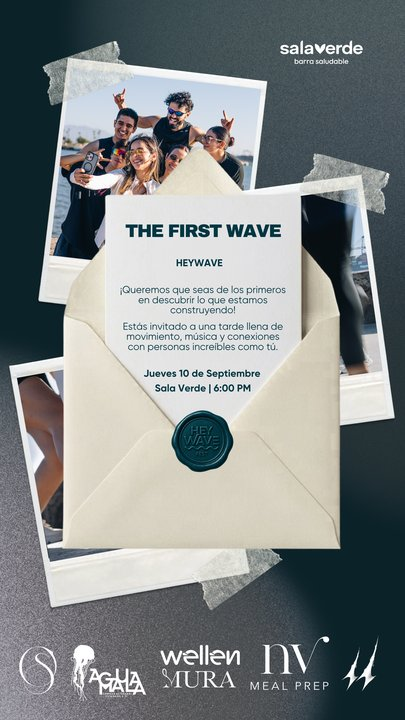
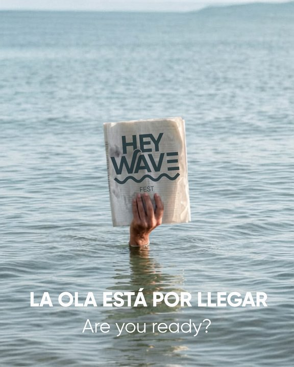
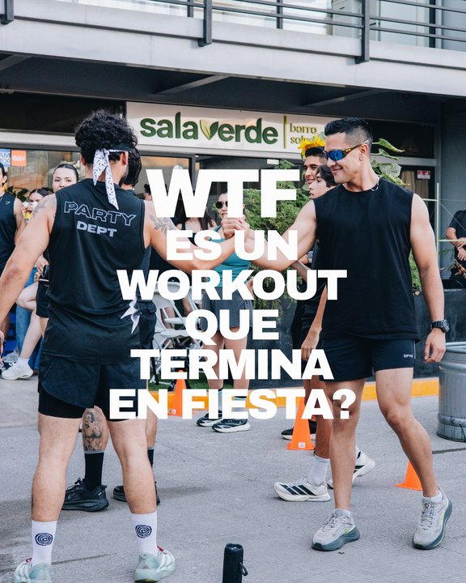
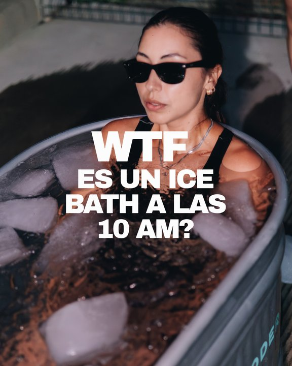
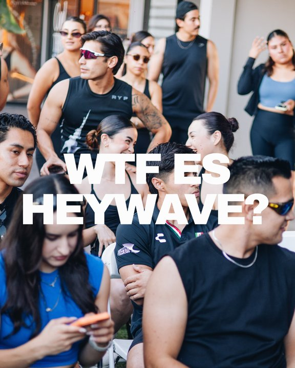
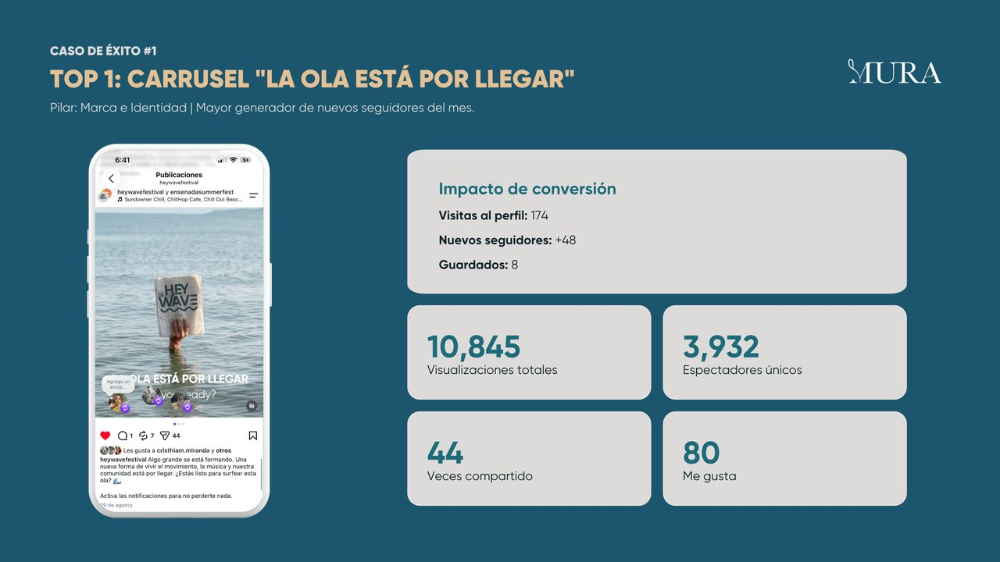
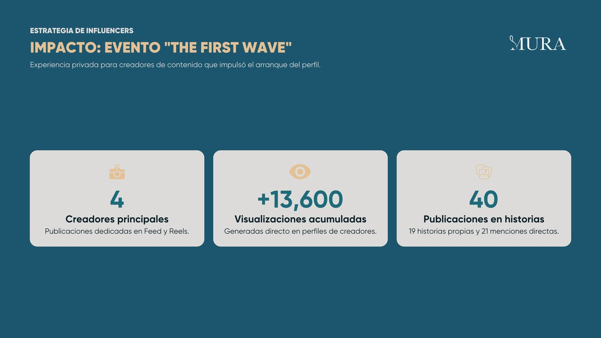
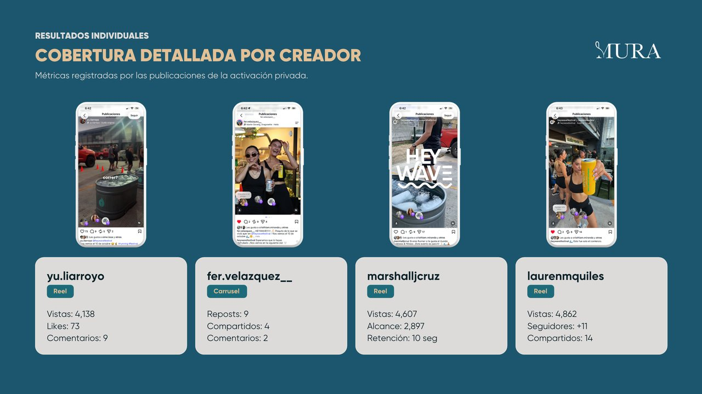

Heywave
Una comunidad desde cero, sin un peso en pauta
Presentamos en Instagram un festival que nadie conocía. En su primer mes llegamos a 13,594 personas y 3 de cada 4 cuentas alcanzadas todavía no seguían la marca.
13,594personas alcanzadas en 30 días
El reto
Posicionar Heywave, un festival wellness, en una ciudad que no lo conocía, antes de tener boletos a la venta.
Lo que hice
- Identifiqué áreas de oportunidad y propuse soluciones.
- Definí objetivos y la estrategia de comunicación y de contenido.
- Establecí pilares de contenido con temas y subtemas semanales.
- Armé la parrilla mensual y creé contenido: reels y posts.
- Activación “The First Wave” con creadores de contenido wellness de Ensenada.
- Reporte de métricas y siguientes pasos.
El resultado
- impresiones
- 84,227
- seguidores nuevos, orgánicos
- +249
- de las cuentas alcanzadas no seguían la marca
- 73.9%
- vistas en perfiles de creadores
- +13,600
- clics directos a taquilla
- 91
- marcas pidieron participar
- 6
El carrusel “La ola está por llegar” fue la pieza estrella: 10,845 visualizaciones y 48 seguidores nuevos por sí solo.







